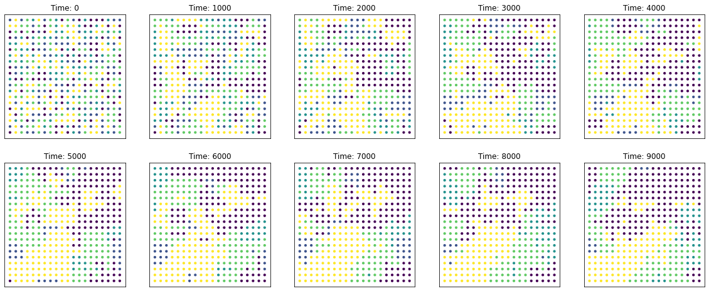

12. Axelrod model#
import matplotlib.pyplot as plt
from mesa import Agent, Model
from mesa.datacollection import DataCollector
from mesa.space import NetworkGrid
from mesa.time import RandomActivation
import numpy as np
import networkx as nx
import random
from tqdm.notebook import tqdm
12.1. Difference Measurement#
This is our metric to check whether the model leads to homogenized state of traits or remain relatively diverse.
\(difference = \frac{1}{n} \sum_{(i,j)\in Edges}|feature_i - feature_j|\)
def f_difference(model):
diff = 0
conn = nx.edges(model.graph)
for edge in conn:
diff += np.mean(abs(model.schedule.agents[edge[0]].feature - model.schedule.agents[edge[1]].feature))
return diff
12.2. Defining the Agent and the Model#
We will define the agent and the object model according to Mesa’s framework. In this implementation, the action is done under the model’s step instead of agent’s step because it is simpler to just call one agent at a time using this interaction because the usual Mesa scheduler require every agent to be activated in each time step.
class axl_agent(Agent):
'''Individual agent represented by a node in a network'''
## Initializing the agent.
def __init__(self, unique_id, feat, trt, model):
super().__init__(unique_id, model)
self.feature = np.random.randint(low = 0, high = trt, size = feat)
## No content on agent's step.
def step(self):
return
class axl_model(Model):
'''Model containing N agents connected in a network. Also change the value of agent here'''
##Initializing the model.
def __init__(self, N, Graph, feat, trt):
self.graph = Graph
self.no_features = feat
self.no_agents = N
self.G = NetworkGrid(Graph)
self.schedule = RandomActivation(self)
## Creating the agents.
for i in range(self.no_agents):
a = axl_agent(i, feat, trt, self)
self.schedule.add(a)
## Creating collector for difference function defined above.
self.datacollector = DataCollector(model_reporters = {"Difference" : f_difference})
## At each model step, they collect data by using the collector.
def step(self):
self.datacollector.collect(self)
agent = random.choice(self.schedule.agents)
neigh = self.schedule.agents[random.choice(self.G.get_neighbors(agent.unique_id))]
prob = np.count_nonzero(agent.feature - neigh.feature)/self.no_features
if np.random.rand() < prob:
index = np.random.choice(np.nonzero(agent.feature - neigh.feature)[0])
agent.feature[index] = neigh.feature[index]
12.3. run the sim on ER graphs#
features = 5
traits = 6
N = 100
P = 0.1
time = 3000
graph = nx.fast_gnp_random_graph(N, P)
model = axl_model(N, graph, features, traits)
for i in range(time):
model.step()
data = model.datacollector.get_model_vars_dataframe()
data.plot()
<AxesSubplot:>
12.4. Grid#
def grid_layout(g):
pos = {}
L = np.sqrt(g.number_of_nodes())
for n in g.nodes():
pos[n] = [int(n/L), n%L]
return pos;
features = 1
traits = 5
N = 20
P = 0.1
time = 10000
ws = {}
graph = nx.grid_2d_graph(N, N)
graph = nx.relabel_nodes(graph, dict(zip(graph.nodes, range(graph.number_of_nodes()))))
model = axl_model(N**2, graph, features, traits)
for i in tqdm(range(time)):
model.step()
if i%1000==0:
ws[i] = []
for j, agent in enumerate(model.schedule.agents):
ws[i].append(agent.feature[0]);
data = model.datacollector.get_model_vars_dataframe()
data.plot()
<AxesSubplot:>
pos = grid_layout(graph) #nx.spectral_layout(graph)
fig = plt.figure(figsize=(20,8))
for i, k in enumerate(ws.keys()):
plt.subplot(2, 5, i+1)
plt.title('Time: '+str(i*1000))
nx.draw_networkx_nodes(graph, pos, node_size=10, node_color=[ws[k][x] for x in graph.nodes()])

12.5. largest component of a certain attribute?#
GCS = []
for t in ws:
gcs = []
for attr in np.unique(ws[t]):
attr_subnodes = [i for i,k in enumerate(ws[t]) if k==attr ]
attr_subgraph = nx.subgraph(graph, attr_subnodes);
gcs.append(len(list(nx.components.connected_components(attr_subgraph))[0]))
GCS.append(np.max(gcs))
plt.plot(GCS)
[<matplotlib.lines.Line2D at 0x12fe755b0>]
12.6. Homework:#
write your own Schellings model (on lattices! how would it look like on networks?)
https://en.wikipedia.org/wiki/Schelling’s_model_of_segregation